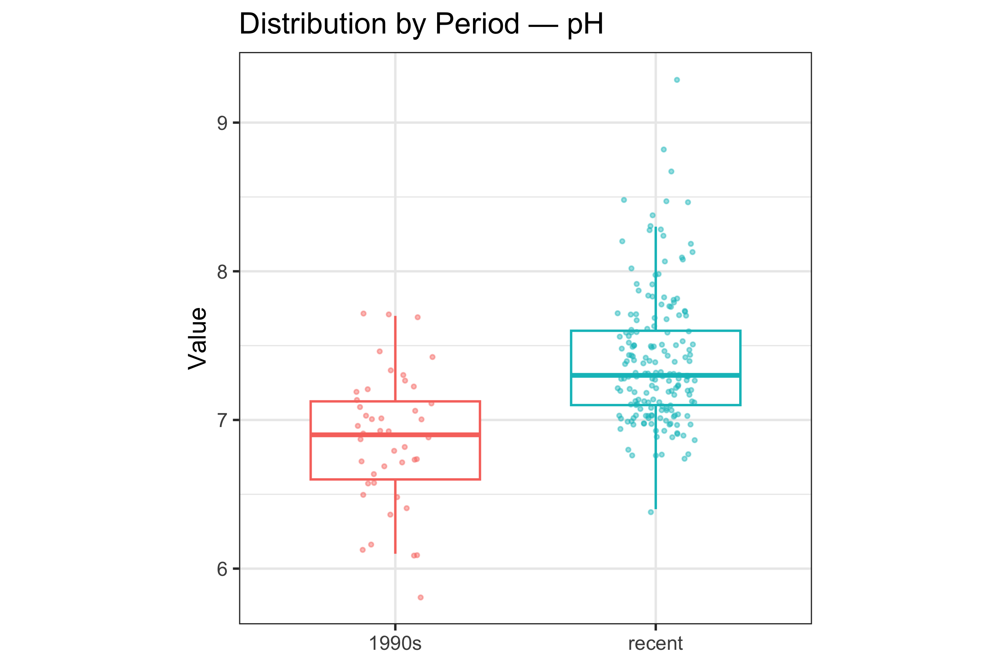
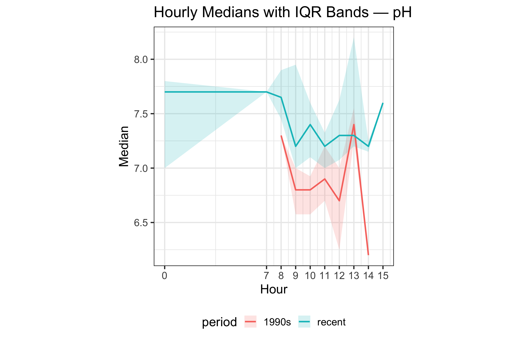

Introduction
yarrariver package provides a cleaned subset of Yarra
River water-quality measurements to let you explore changes in Yarra
River water quality between the 1990s and recent years (≥ 2015). It
contains two datasets and a Shiny app which helps to reproduce the core
findings.
-
What’s inside
-
yarra_wq_period: row-level measurements labelled byperiod(“1990s” or “recent”) with variablesparameter,value,date,hour, etc. -
wq_hourly_median: derived hourly summaries (median and IQR) byparameter × period × hour. -
launch_app(): an interactive Shiny app to compare periods by parameter.
-
-
What you can do
Inspect distributions of parameters by period.
Check whether differences persist within the day using hourly medians and IQR bands.
Use the app to visualize the results interactively.
-
Data source & scope
Source.The raw data is downloaded from Victorian Water Measurement Information System (WMIS).
Site coverage. This dataset is specific to CHANDLER HIGHWAY KEW, which has sufficient measurements in both periods.
Parameters.The cleaned dataset contains parameters with coverage in both periods—pH (210), Water Temperature (450), Turbidity (810), Salinity as electrical conductivity (820).
The data cleaning script is in `data-raw/prepare_yarra_data.R`.
# access the data
library(yarrariver)
data(yarra_wq_period)
data(wq_hourly_median)
dplyr::glimpse(yarra_wq_period)
#> Rows: 888
#> Columns: 15
#> $ site_id <fct> 229143, 229143, 229143, 229143, 229143, 229143, 22…
#> $ name <fct> YARRA @ CHANDLER HWY, YARRA @ CHANDLER HWY, YARRA …
#> $ data_type <fct> Quality, Quality, Quality, Quality, Quality, Quali…
#> $ parameter_id <fct> 210, 210, 210, 210, 210, 210, 210, 210, 210, 210, …
#> $ parameter <chr> "pH", "pH", "pH", "pH", "pH", "pH", "pH", "pH", "p…
#> $ value <dbl> 7.1, 7.0, 6.2, 6.7, 7.7, 6.9, 6.1, 6.7, 7.7, 7.4, …
#> $ unit_of_measurement <chr> "pH", "pH", "pH", "pH", "pH", "pH", "pH", "pH", "p…
#> $ quality <dbl> 65, 65, 65, 65, 65, 65, 65, 65, 65, 65, 65, 65, 65…
#> $ date <date> 1991-01-08, 1991-02-12, 1991-03-12, 1991-04-09, 1…
#> $ year <int> 1991, 1991, 1991, 1991, 1991, 1991, 1991, 1991, 19…
#> $ month <int> 1, 2, 3, 4, 5, 6, 7, 8, 10, 11, 12, 1, 2, 3, 4, 5,…
#> $ weekday <chr> "Tuesday", "Tuesday", "Tuesday", "Tuesday", "Tuesd…
#> $ time <chr> "13:50:00", "09:35:00", "14:00:00", "11:00:00", "1…
#> $ hour <int> 13, 9, 14, 11, 11, 10, 12, 12, 11, 13, 12, 10, 12,…
#> $ period <chr> "1990s", "1990s", "1990s", "1990s", "1990s", "1990…Visualisation
Here are two examples of how the plots are built to visualize the water quality change by period for parameter pH.
Distribution by period
ph_dist <- dplyr::filter(yarra_wq_period, parameter == "pH")
ggplot2::ggplot(
ph_dist,
ggplot2::aes(x = period, y = value, colour = period)
) +
ggplot2::geom_boxplot(outlier.shape = NA, width = 0.65) +
ggplot2::geom_jitter(width = 0.15, alpha = 0.45, size = 0.9) +
ggplot2::labs(
title = "Distribution by Period — pH",
x = NULL, y = "Value"
) +
ggplot2::theme_bw(base_size = 16) +
ggplot2::theme(aspect.ratio = 1, legend.position = "none")
This plot allows you to compare the 1990s vs recent years using boxplots (median + IQR) with points for individual observations for each parameter. Read it to see whether the recent period is higher or lower than the 1990s and whether variability has changed.
Hourly medians with IQR bands
ph_hourly <- dplyr::filter(wq_hourly_median, parameter == "pH")
ggplot2::ggplot(
ph_hourly,
ggplot2::aes(x = hour, y = median, colour = period, fill = period)
) +
ggplot2::geom_ribbon(ggplot2::aes(ymin = q1, ymax = q3), alpha = 0.18, colour = NA) +
ggplot2::geom_line(linewidth = 0.9) +
ggplot2::scale_x_continuous(breaks = unique(ph_hourly$hour)) +
ggplot2::labs(
title = "Hourly Medians with IQR Bands — pH",
x = "Hour", y = "Median"
) +
ggplot2::theme_bw(base_size = 16) +
ggplot2::theme(aspect.ratio = 1, legend.position = "bottom")
Shiny app
You can launch the app by:
# run_yarra_app()This app allows you:
Select All (view all parameters in facets) or a single parameter.
Select period (1990s / recent) to see how both plots respond.
-
Select tab to see the figures:
Distribution: boxplots + jitter comparing periods
Hourly medians: hourly median lines with IQR ribbons
Read the interpretation tips for plots.